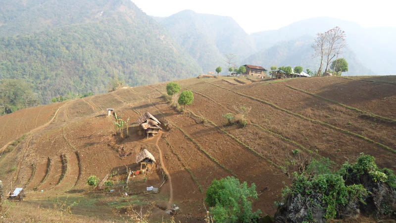
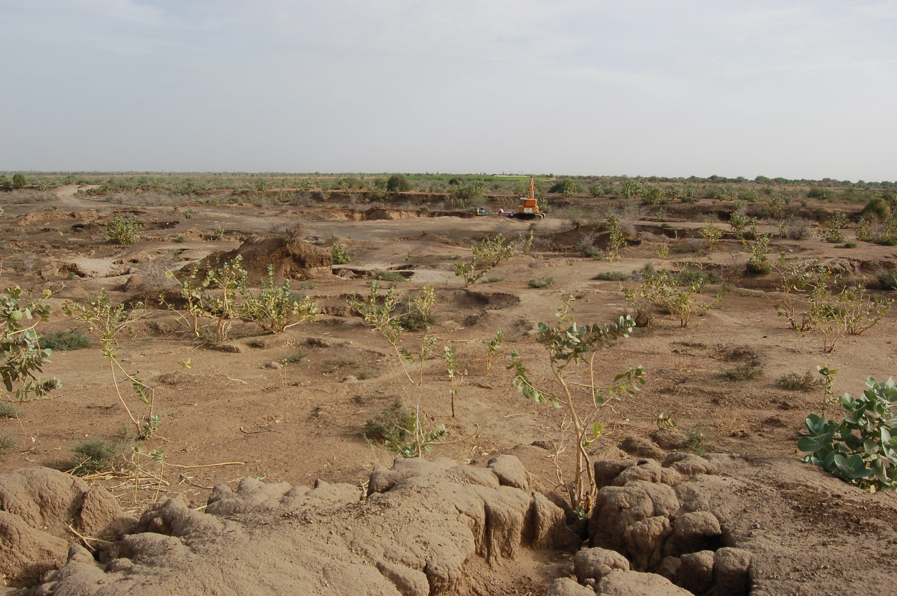
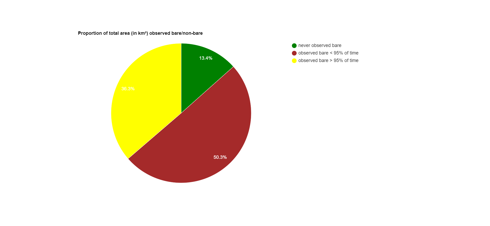

Soil Erosion and Agriculture
Learn about the impact of soil erosion on agriculture
What is Soil Erosion?
Soil erosion is the process of detachment and movement of soil particles from their original location. It is a natural process that occurs due to various factors such as wind, water, and gravity. However, human activities such as deforestation, overgrazing, and poor land management practices have accelerated the process of soil erosion.
Impact of Soil Erosion on Agriculture
Soil erosion has a significant impact on agriculture. It reduces the fertility of the soil and decreases crop yields. Soil erosion also leads to soil compaction, which makes it difficult for plant roots to penetrate the soil and absorb nutrients. This can lead to the death of plants and loss of crop production.
Prevention of Soil Erosion
Soil erosion can be prevented by implementing soil conservation practices such as planting cover crops, terracing, and contour farming. These practices help to reduce the impact of erosion and maintain soil fertility.

Conclusion
Soil erosion is a serious problem that affects agriculture and the environment. It is important to take measures to prevent soil erosion and maintain soil fertility to ensure sustainable agriculture.
